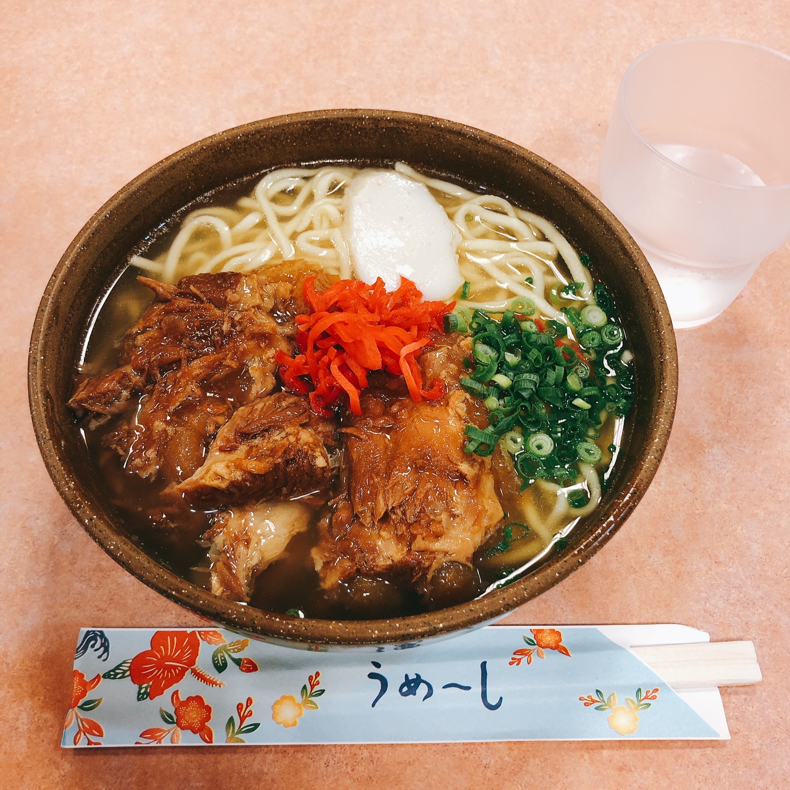

OIST Skill Pills+
Posted on Sun, 10 Nov 2019 in OIST

From November 8 to 10, I participated in the OIST, Skill Pills+, which provides a unique opportunity for students in Japan to learn about research being conducted in the Okinawa Institute of Science and Technology Graduate University (OIST) directly from active researchers.
The reason why I participated in it was that I was interested in "OIST" and "Neuroscience".
- As some newspaper reported that OIST is the most suitable environment for research in Japan, I wanted to visit and experience the life.
- I'm now trying the task of "Object Tracking" using deep learning techniques, and I noticed when occlusion (someone hide behind the other) occurs, the performance will drastically decrease. I thought it is due to the memory mechanism, so I wanted to learn how the brain memorize and recognize the pattern, and reverse these flexible mechanism to computer models.
Fri. 10/8
We arrived the Naha Airport at 16:00. As Workshop handbook (participants introduction was in) was already available and the seat in the airplane was close to each other, I got to know some participants before the meeting time.
One of them made this program much much better, so I'll call him "S" later. He had an experience doing internship in OIST this summer, so he knew OIST very well.
 We ate Okinawa soba at the airport with some participants.
After arrived to OIST accommodation, Seaside House, we had a dinner with the members of Neural Coding and Brain Computing Unit. They were very kind and listened eagerly to my English.
Then, we had a free time. First of all, I planed to walk to a convenience store with participants to deepen the friendship, but "S" invited me to a nearby bar, GRANDLINE, so I went to there.
It was the only bar near the Oist, so there were many students in OIST, they were all friendly and we enjoyed talking till 2:00 a.m.
I had already liked OIST at that time.
Sat. 10/9
From 9:00 to 18:00, we had been listening to lectures. I summarized what I learned, so if you are interested in them, please look here.
After the lecture, we had a dinner at OIST, and went back to the accommodation.
Fortunately, there was a farewell party for one of the members in OIST, and they were kind enough to invite us. As I had never participated in such party before, I was a little confused, but gradually got used to it and enjoyed it.
Sun. 10/10
We had some advanced lecture and finished the all programs.
Of course the lecture was interesting, the most impressive thing was the atmosphere of OIST. People in there were very friendly and open. This experience deepened my desire to study abroad.